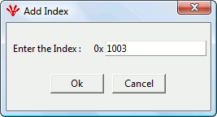

Index can be added by right-clicking the node for which Index has to be added as shown in Figure . Node can either be MN or CN.
After clicking “Add Index”, a pop-up with a textbox will appear as shown in Figure . Enter the Index and press ‘OK’. Index will be added in the Node.


Objects which can be added are :
Communication Profile Area Objects
Communication Profile Area Objects will be added automatically with the Default properties as mentioned in the EPSG specification EPSG DS 301 V1.1.0. Range is 1000-1FFF
As shown in Figure , default properties like Name, ObjectType, DataType are automatically added.
Manufacture Specific Profile Area Objects
The User can also add objects which are manufacturer specific that lie in the range of 2000 – 5FFF. As these objects are manufacturer specific, no property will be set by the tool. The user can edit all the properties of these objects.
Standardized Device Profile Area Objects
The user can also add objects which are manufacturer specific that lie in the range of 6000 – 9FFF. No default properties will be set by the tool.
Standardized Interface Profile Area Objects
The user can also add objects which are manufacturer specific that lie in the range of A000 – BFFF. No default properties will be set by the tool.
Reserved for further use
The user can also add objects which are manufacturer specific that lie in the range of C000 – FFFF No default properties will be set by the tool.
Sub-Index can be added by right-clicking the object for which sub-index has to be added as shown in Figure

After clicking “Add SubIndex, a pop-up with a text box will appear as shown in Figure 19. Enter the Sub-Index and press ‘OK’. Sub-index will be added in the Node.

NOTE: The subobjects can only be added to the Objects whose object type is RECORD or ARRAY
Communication Profile Area Objects
Communication Profile Area Objects will be added automatically with the Default properties as mentioned in the EPSG specification EPSG DS 301 V1.1.0.
Default properties like Name, ObjectType, DataType, AccessType, Default Value is automatically added.
For the other Objects(Manufacturer Specific Profile Area, Standarised Device Profile Area, Standardised Interface Profile Area Objects, Reserved for further use), if sub-index is added, no default property will be set.